O que é HTML?
(voltar)HTML significa (HyperText Markup Language); em português (Linguagem de marcação de texto).
HTML é uma linguagem de marcação, uma linguagem estrutural e através dela você constrói o esqueleto do seu site.
O HTML se consiste em duas partes, essas partes são: Cabeça(Head) e Corpo(Body)
O que é head?
Head nada mais é que informações que vão carregar antes de exibir ao usuário.
O que é body?
Body é tudo aquilo que irá ficar visivel ao usuário
Atributos
(voltar)Atributos são propriedades que uma tag pode ter, temos alguns atributos que são génericos, resumindo qualquer tag pode ter outros mais especificos que apenas algumas tags podem ter.
Um desses atributos é o ID, o atributo ID é nada mais que um identificador para referenciar um elemento específico na sua página, muito utilizado para identificar um elemento no JavaSript.Temos outros também como o style que serve para estilizar o elemento; e o class que serve para padronizar titulos principais no CSS.
Temos alguns atributos mais específicos como:
- Type: ele é especifico do input, altera o formato daquele input, como apenas para escrever textos ou números;
- Src: Um atributo especifico para tags de mídia, serve para definir o endereço de uma imagem;
- Width: Define uma largura ao elemento.
Não existem apenas esses atributos, existem outros diversos atributos, tanto genéricos como especificos.
Tags de Textos
(voltar)Essas tags servem justamente para escrever textos, estilizar de maneira simples, adicionar paragrafos, titulos, etc.
- H1: é o tamanho maior de titulo, podendo diminuir até o h6
- P: define um parágrafo.
- Blockquote: é utilizada para fazer uma citação de outra fonte. ela é seguida de uma tag filha que é a tag (cite).
- Mark: é um marcador de texto.
- Strong: deixa o texto em negrito.
- U adiciona um sublinhado ao texto.
- Sup: coloca um texto elevado a outro.
- HR: cria uma linha separadora entre as linhas do seu site.
- Small: cria um texto pequeno.
Existem outras diversas tags, más essas são algumas mais simples.
Tags de Listas
(voltar)Essas tags são utilizadas para criar listas ordenadas(ol) e listas não ordenadas(ul), essas listas necessitam de uma tag filha que é a tag (li), pode ser utilizada para fazer sumarios, etc.., más é muito utilizado para estilizações no CSS.
- ol(Listas ordendas): São listas identificadas por números.
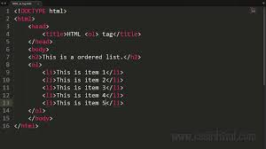 - ul(Listas não ordenadas): São listas identificadas por marcadores.
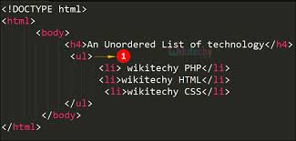
Links
(voltar)Utilizamos uma tag especifica seguido de um atributo para criarmos um link, podemos dar um nome a esse link, fazer com que o usuário seja redirecionado a outra página em uma nova guia, ou carregar uma outra página na mesma guia.
(a href=""): o a é utilizado para redirecionar o usuário a outro local, o href é utilizado como atributo dentro da tag a para referenciar o local para onde o usuário vai ser redirecionado quando clicar.

- Atributo target: tem alguns valores, más os dois principais valores são (_blank) que serve para abrir o seu link em outra aba, e o (_self) que é para abrir o seu link na mesma aba
- Atributo title: adiciona uma caixinha quando você passa o mouse em cima de algum elemento que ele esteja incluido.
Utilizamos também a tag (a href="") para redirecionar o usuário para um elemento especifico da sua própria página, basta você criar um ID no elemento que você deseja que o usuário seja redirecionado no lugar de um link.
Formulários
(voltar)Os formulários andam de mãos dadas com o servidor, é uma área onde o usuário vai ter campos para preencher informações, quando clicado no botão de enviar, ele vai pegar os dados do formulário e vai enviar para o servidor.
O formulário se consiste na tag form que tem como tag filha a tag input.
A tag input te possibilita criar uma área onde o usuário irá responder.
Atributos do Form
- Name: Dá um nom,e ao formulário, é usado para utilizar essa instância no JavaScript.
- Method: Ele tem dois valores possíveis; Get(Pega aquelas informações e exibe na url); Post(Encapsula as informações enviadas).
- Action: Indica para onde essas informações serão enviadas.
- Autocomplete on/off: Esse atributo autocompleta as informações da forma que você tinha enviado aquelas informações; Se estiver no off ele não irá autocompletar.
- On(algumacoisa): Tudo que é on, significa que é um evento.
- Onsubmit: Aqui iremos imbutir um código JavaScript, serve para decidir o que aquele botão vai fazer.
Esses são alguns atributos do Form.
Tag Input e Seus Tipos
Algumas tags inputs podem não funcionar em outros navegadores, por motivos de compatibilidade.
Geralmente utilizamos um label para por o nome do input.
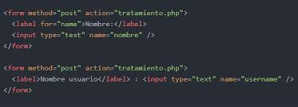- Text: Cria um campo de texto comum.
- Number min/max: Cria um campo numérico, podemos definir um número minimo e maximo daquela caixa, e utilizando o atributo step você pula quantas casas desejar.
- Button: Tem duas formas, você pode utilizar dentro do input type, ou pode utilizar a tag button, esse atributo só cria um botão.
- Range: Cria um campo scroll, você pode utilizar os atributos min/max, value.
- E-mail: Cria um campo para você por um email, se você não implementar um @ ele causa uma mensagem de erro.
- Url: Funciona da mesma forma que o E-mail, más ele é para sites, e requer o http/https.
Esses são alguns dos vários atributos do input.
CheckBox e Radio
O checkbox e o radio são campos de preenchimento de seleção.
O checkbox é representado por um quadradinho, e possibilita fazer multiplas seleções.
A ideia do checkbox é você selecionar múltiplos valores, porém no momento que você enviar as informações para um servidor, você precisa falar quais valores você selecionou, geralmente não mandamos um por um.
Outra ideia do checkbox é que ele seja apenas uma variável com 1 ou mais valores
Quando selecionamos os checkbox e enviamos, ele irá sempre pegar o ultimo valor que foi selecionado, o servidor não vai entender que você enviou uma lista, uma forma de enviar todas as informações para o servidor você adiciona [] (colchetes) para indicar que é uma lista.
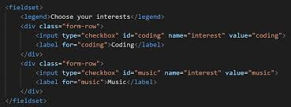O radio é representado por uma bolinha, e possibilita fazer apenas uma seleção.
No radio se você não adicionar um name, ele vai fazer uma multipla seleção, agora se você adicionar um name, ele irá selecionar apenas um, como é a ideia do próprio radio.
Com o atributo disable, ele irá deixar o valor desabilitado.
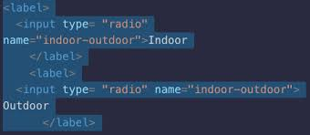Button e seus tipos
Você terá 3 tipos na tag button
- button: você irá criar um tão clicável.
- reset: assim que você clicar ele irá limpar o campo em que ele está incluido no form.
- submit: irá enviar o formulário, e ele valida o enter do teclado.
O evento submit tem que esta dentro do form ou seja, onsubmit, para validar se todos os campos estão preenchidos antes de enviar.
É importante validar os campos tanto no frontend quanto no backend, por questões de segurança.
Select e seus tipos
O select é uma lista pré-definida de certos valores que são pré-definidos, dentro dela vão ter opções para selecionar, ela terá uma tag filha que no caso é a tag option.
A tag option define a opção que você deseja colocar no sistema, dentro dessa tag você pode colocar um valor nulo e depois ir colocando as seleções que você deseja.
O multiple vai permitir o usuário a selecionar múltiplos itens dentro do select.
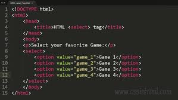Textarea
É uma área de texto, como se fosse o campo text, más esse tipo permite você escrever um texto com diversas linhas.
- Atributo rows: você consegue definir a altura do textarea.
- Atributo cols: você define a largura.
Más esses atributos não impedem do usuário escrever quantas linhas quiser.
Estruturação do HTML
(voltar)Agora vamos ver algumas tags de estruturação do HTML!
Div e Span
Serve para a criação da "planta" do site, são chamadas de tags coringas, utilizamos essas tags para estruturar alguma página web, ela serve para delimitar um espaço e através do CSS podemos manipular esse espaço.
A div, serve para dizer onde você vai colocar seu conteúdo, ou seja, você cria uma div no seu HTML e dentro dessa div você coloca um conteúdo.
A div vem como padrão display block, ou seja, ocupa o espaço horizontal inteiro.
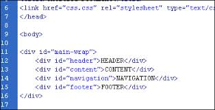A tag span não ocupa a horizontal inteira, ela não tem um padrão display block, e diferente da tag div, o span te permite personalizar apenas um trecho.
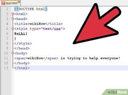Fieldsets
É uma tag estrutural, más de uma forma específica, ela te permite delimitar sua página com um caráter mais visual.
Dentro do fieldset você usa a tag legend para dar tipo um texto a essa área delimitada pelo fieldset.
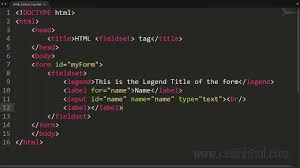Iframes
Tome muito cuidado com ele, pois ele pode afetar a segurança do seu site.
O iframe permite o usuário abrir uma janela na sua página com conteúdo de outra página.
O iframe permite além de trazer mídias, permite trazer sites inteiros.
Tags de mídias
Mídias são tudo aquilo que é relacionado a som e imagem.
Tag img
Tag de imagens, a tag img vem seguida do src, que é o local que sua imagem está, opde ser arquivos locais do seu computador, ou imagens de sites, adicionando o atributo width, ele redimensiona sua imagem.
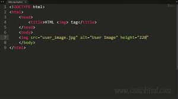Atributos Title e Alt
- Title: ele define um balãozinho com um titulo da imagem
- Alt: define uma descrição da imagem, é ótimo para acessibilidade
Tag áudio
Tag para audios, é nativo do navegador, você não precisa codificar um player pois ele ja tem um player próprio.
Contém peso semântico, o WebScraping saberá que aquele conteúdo é um áudio.
Esta tag vem seguida de uma tag filha source que vai definir o caminho desse áudio.
Caso seu navegador não tiver suporte para essa tag, coloque um aviso de que o navegador não tem compatibilidade com o áudio.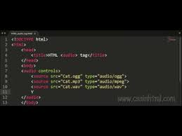
- Atributo controls: cria um painel de controle de áudio.
- Atributo autoplay: inicia a música assim que abrir o site.
Tag video
Assim como o áudio, é nativo do navegador, segue da mesma forma qe o áudio, temos o tributo controls e é seguida da tag filha source
Coloque um aviso caso o navegador não seja compátivel
Você pode fazer um cadeamento, para caso o navegador não seja compatível com um tipo de vídeo, ele vai fazer a leitura da lista(cadeamento) que você fez, e carregar o primeiro que o navegador é compatível.
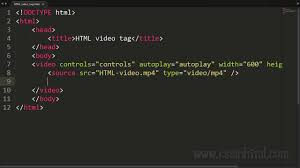Tag track
Fica dentro da tag video, nada mais é que as legendas do video.
Você coloca chapters(capítulos) que nada mais são que arquivos de texto, de que momento até outro momento fala de determinado texto.
Existem arquivos vtt, que são arquivos onde você define quando a legenda começa e quando termina, existem programas que fazem esse tipo de arquivo.
Você tem que definir 3 atributos.
Esses atributos são:
- SRC: define o local que o arquivo está.
- KIND: - Descriptions: é o que o leitor de tela vai ler
- Captions e Subtitles: São basicamente a mesma coisa, o subtitles ele fala alguns detalhes da cena, enquanto o captions ele realmente é a legenda da pessoa falando
- Metadatas: são informações adicionais.
- Srclang: você define a linguagem da legenda, você pode ter mais de uma legenda; Adicionando o atributo default, você define a linguagem padrão da legenda.